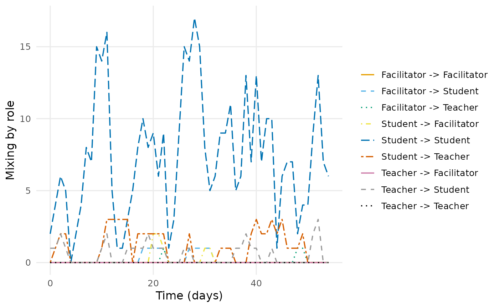

How much each kind of vertex interacted with each other kind, in every time bin. This is the question a temporal network answers that a static one cannot: not whether high and low achievers mixed, but when they did, and whether the pattern held or decayed.
The grouping variable comes from the vertex attributes supplied to
dynet() through its nodes argument.
Usage
mixing(
dn,
attribute,
sessions = c("bounded", "collapse", "separate"),
sample = NULL,
start = NULL,
end = NULL,
step = NULL,
window = NULL,
plot = FALSE
)Arguments
- dn
A temporal network from
dynet()built with vertex attributes.- attribute
Name of a column in the vertex table.
- sessions
How to treat sessions, as in
dyn_centrality().- sample
Deprecated.
"instant"is equivalent towindow = 0;"window"uses the current positive/default window.- start, end
First and last time at which to measure. Default to the observed range. A network built from dates may be addressed with dates.
- step
How often to measure. Defaults to the interval the network was built with.
- window
How much time each measurement covers. Defaults to
step, which tiles the period into disjoint bins. A larger value slides an overlapping window;0samples the network at each point in time."all"measures the whole observed period as one window, closed on the right so an event at the final instant is inside it; it cannot be combined withstep, and undersessions = "separate"or discontinuous observation it gives one window per session or observed component.- plot
Whether to draw the result as well as return it. Drawing is a side effect in the manner of
graphics::hist(): the verb still returns its tidy table, invisibly when it has drawn, soplot = TRUEsaves the wrappingplot()call without changing what comes back. Useplot()on the result when the figure needs arguments of its own.
Value
A dynet_metric at graph level with one row per time point and
group pair. Directed measure labels use "A -> B"; undirected labels
use "A -- B". value is the active binary-dyad count, and the
authoritative from_group and to_group columns identify the cell.
Attributes record unit, pair-domain, normalization, weight, loop,
missing-group, and session-aggregation conventions.
Details
Each cell is a raw count of distinct active binary vertex dyads. Repeated, overlapping, or split spells and edge weights do not multiply a dyad. Retained self-loops count once. For directed networks, every ordered group pair is reported and $$M_{ab}=\sum_{u:g(u)=a}\sum_{v:g(v)=b}Y_{uv}.$$ The row and column margins are grouped outdegree and indegree, and the table sum is the active directed edge count including retained loops.
Undirected networks report one lexicographically canonical cell for each
unordered group pair, with display labels such as "A -- B". A within-group
edge or loop contributes once to its diagonal cell. The group stub margin is
$$d_a=2M_{aa}+\sum_{b\ne a}M_{\min(a,b),\max(a,b)},$$
so the margins sum to twice the table total. These are unnormalized counts,
not Newman's mixing proportions.
Missing attribute values are retained as a collision-safe explicit group ordered after observed labels. Bounded and collapsed modes both use the binary calendar union: a dyad active in two sessions at the same time counts once. Separate mode returns session-local tables over the fixed group universe. Every supported cell is emitted, including zeros. Declared vertex activity first induces the endpoint-valid snapshot. The complete group-cell universe remains fixed, but inactive vertices and eligible isolates contribute no dyad.
References
Newman, M. E. J. (2003). Mixing patterns in networks. Physical Review E, 67, 026126. doi:10.1103/PhysRevE.67.026126
Morris, M., Handcock, M. S., & Hunter, D. R. (2008). Specification of exponential-family random graph models: terms and computational aspects. Journal of Statistical Software, 24(4). doi:10.18637/jss.v024.i04
Examples
dn <- dynet(forum_posts, thread = "thread", nodes = forum_people)
mixing(dn, attribute = "role")
#> # Mixing by role (graph-level)
#> # 55 time points, 1 per bin | time in days
#> # measures: Facilitator -> Facilitator, Student -> Facilitator, Teacher -> Facilitator, Facilitator -> Student, Student -> Student, Teacher -> Student, Facilitator -> Teacher, Student -> Teacher, Teacher -> Teacher
#> # active binary-dyad counts between vertex groups per time bin
#> time measure value from_group to_group
#> 0 Facilitator -> Facilitator 0 Facilitator Facilitator
#> 0 Student -> Facilitator 0 Student Facilitator
#> 0 Teacher -> Facilitator 0 Teacher Facilitator
#> 0 Facilitator -> Student 0 Facilitator Student
#> 0 Student -> Student 2 Student Student
#> 0 Teacher -> Student 1 Teacher Student
#> 0 Facilitator -> Teacher 0 Facilitator Teacher
#> 0 Student -> Teacher 0 Student Teacher
#> 0 Teacher -> Teacher 0 Teacher Teacher
#> 1 Facilitator -> Facilitator 0 Facilitator Facilitator
#> 1 Student -> Facilitator 0 Student Facilitator
#> 1 Teacher -> Facilitator 0 Teacher Facilitator
#> # 483 more rows. summary() aggregates them; plot() draws them.
plot(mixing(dn, attribute = "role"))
